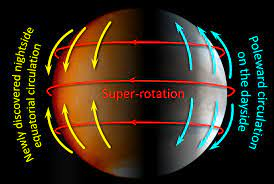

Венера схожа с Землей по составу и размерам, но сильно отличается по внешнему виду и условиям на поверхности. Атмосфера планеты состоит из нагретых до больших температур углекислого газа и паров серной кислоты и обладает очень высокой плотностью. Данные спектрометра SPICAV, установленного на орбитальной станции Venus Express, показали, что в мезосфере Венеры на высоте 85-100 км озона в 10 тысяч раз меньше, чем в атмосфере Земли. А содержание двуокиси серы значительно меняется в течение нескольких суток. Благодаря исследованию с использованием звездного просвечивания, когда спектрометр следил за звездами при их восходе и заходе за горизонт планеты, ученым удалось выяснить концентрацию основного газа венерианской атмосферы. Такое распределение озона указывает, что газ взаимодействует с химическими соединениями, которые ветры переносят из дневной стороны полушария на ночную. А из-за того, что атмосфера Венеры вращается в 60 раз быстрее поверхности планеты, скорость ветра здесь может составлять до 500 км/ч.
 Предыдущая Странца